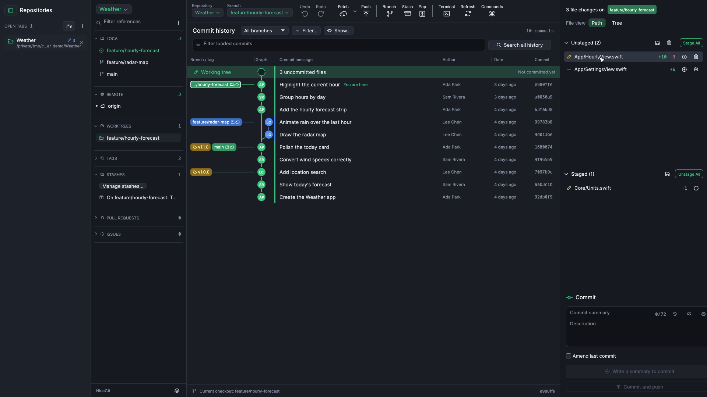

NiceGit guide
Everything you need to get going. The feature guide describes every feature in detail.
Shortcuts are written with Command. On Windows and Linux, use Ctrl instead.
Install
NiceGit needs Git installed and on your PATH. Download NiceGit from the latest release:
- macOS 11 or newer: open the
.dmgand drag NiceGit to Applications. The app is signed and notarized by Apple. - Windows 10 or newer: extract the
.zipand runnicegit.exe. If SmartScreen warns about an unknown publisher, choose More info, then Run anyway. - Debian and Ubuntu: install the
.debwithsudo apt install ./NiceGit-*-linux-amd64.deb. - Other Linux: extract the
.tar.gzand runnicegit. It needslibxkbcommon-x11-0and OpenGL (libgl1,libegl1).
NiceGit asks GitHub once a day whether a newer version exists, and shows a notice with a download link when one does. Nothing else is sent. Turn it off, or check by hand, under Settings › General.
Every download includes the licences of the open-source components built into NiceGit. SHA256SUMS.txt on the release page lets you check a download.
Open a repository
Use the repository menu at the top of the branches sidebar:
- Open a folder that is already a Git repository (Command-O), or drag the folder onto the window.
- Clone from a remote address or a local path. Clones go into a default folder you can set in Settings.
- Create a new repository in an empty or existing folder.
Each repository opens in its own tab. Switch with Command-1 to Command-9, and close one with Command-W or a middle-click. The Repositories column on the left lists open tabs and recent repositories. Hide or show it with the framed button at the top left of the sidebar.
The window

- Branches sidebar: local and remote branches, worktrees, tags, stashes, pull requests and issues. Type in Filter references to narrow the lists.
- Commit history: the graph of every branch. The top row, Working tree, stands for your uncommitted changes. Click a commit to see its details and files in the inspector.
- Changes panel: your unstaged and staged files, each in its own list, and the commit box below them.
Stage and commit
- Click a changed file to see its diff.
- Stage the whole file with the + beside it, or Stage All. To stage part of a file, press + beside a line, drag over several lines, or hover a change and choose Stage.
- Write a summary, and optionally a description, in the commit box.
- Press Commit (Command-Enter), or Commit and push (Shift-Command-Enter).
Turn on Amend last commit to fold staged changes into your previous commit. Discarding a file's changes can be undone from the bar that appears afterwards.
Branches and remotes
- Double-click a branch in the sidebar to check it out. NiceGit saves uncommitted changes in a stash first, so nothing is lost.
- Create a branch with the Branch button in the toolbar, or from any commit's right-click menu.
- Drag a branch onto the current branch to merge or rebase it. NiceGit previews which files will conflict before you start.
- Fetch, Pull and Push are in the toolbar. NiceGit also fetches in the background every 15 minutes.
- Right-click a branch, tag or commit for everything else: rename, delete, set upstream, cherry-pick, revert, reset and more.
Rewrite history
- Interactive rebase: right-click the commit to start from and choose Interactive rebase from here. Drag commits into order, and pick, reword, edit, squash, fix up or drop each one.
- Edit a message: right-click any commit on the current branch and choose Edit message.
- Fix up: stage a change, right-click an older commit and choose Fix up to fold the change into it.
When the commits are already on a remote, NiceGit warns you first. Afterwards it offers a force push with a lease, which is refused if someone else pushed in the meantime.
Undo and recovery
Undo in the toolbar steps back through your last 20 NiceGit actions that moved the current branch, including commits, merges, rebases, resets, pulls and cherry-picks. Redo steps forward again.
Commits left behind by a reset or rebase can be found again with Recover lost work… in the repository menu. Create a branch at any of them to keep them.
Keyboard
- Shift-Command-P opens the command palette, for actions, branches and repositories.
- Command-P goes to a file. Shift-Command-F searches the history of every branch.
- Control-` shows or hides the terminal for the current checkout.
- Command-/ lists every shortcut.
GitHub and GitLab
Pull requests and issues for GitHub use the GitHub CLI. Install it, sign in once with gh auth login, then choose a remote under Pull Requests or Issues in the sidebar.
The Launchpad, in the repository menu, lists open pull requests across your repositories. It also lists GitLab merge requests when the GitLab CLI is installed and signed in with glab auth login. NiceGit reuses those logins and stores no token of its own. Remotes on GitLab and Bitbucket also get links to open commits, branches and files in your browser.
Help and feedback
- Ask a question or share an idea in Discussions.
- Found a problem? Report it, using a disposable repository to show the steps where you can.
- Security problems go privately through the security policy.